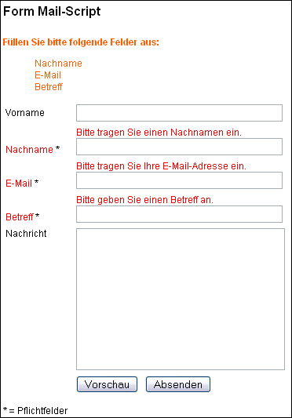

Dokumentation Form Mail Script
Vielen Dank für Ihr Interesse an unserem Form Mail Script. Wir empfehlen Ihnen, sich Zeit für die Lektüre dieser Anleitung zu nehmen.
2.2 Script per Include einbinden
2.3 Hochladen (Upload) des Scripts zum Server
2.4 Datei- und Verzeichnisrechte setzen
3.1 Einstellungsmöglichkeiten in der Datei "index.php":
3.2 E-Mails per SMTP versenden
4 Anpassung des HTML-Templates - templates/form.tpl.html
4.1.1 Auswahl-Menüs (Select-Menüs)
4.1.6 Zwei oder mehr Felder miteinander vergleichen
4.2 Erweiterte Fehlermeldungen
4.2.1 {required:feldname=Fehlertext}
4.2.2 {syntax:feldname='Fehlertext':endsyntax}
4.2.3 {error:feldname='Normaler Text'||='Fehlertext':enderror}
4.3 Danke-Seite (Bestätigungsseite)
4.5 Dateien einbinden (include)
4.6 Formatierung des Werbe-Links
4.7 Festlegen des HTML-Templates
4.8 Festlegen des Mail-Templates
5 Anpassung des E-Mail Templates - /templates/mail.tpl.txt
5.1 Kopfbereich (Header) der E-Mail
5.3 Auto-Responder – Bestätigungs-E-Mail
5.4 Gesamte Formulardaten gebündelt anzeigen
5.5 Umgebungsvariablen, Server-Datum und -Uhrzeit
6 Sprachdateien – language.de.inc.php
7 Die Log-Datei - /logfiles/logfile.txt
9 Informationen zur Script-Lizenz
Das Form-Mail-Script ermöglicht Ihnen, Informationen aus Formularen auf Ihrer Website per E-Mail an einen oder mehrere Empfänger zu senden. Die E-Mails können sowohl im Text- als auch im HTML-Format versendet werden.
Darüber hinaus verfügt das Script über mehrere Sicherheitsfunktionen um den Missbrauch durch Dritte (z.B. Spammer) zu verhindern. Außerdem bietet das Script die Möglichkeit, alle versendeten Nachrichten in einer Textdatei zu protokollieren.
Das Layout von Formular und E-Mail lässt sich mit Hilfe von HTML-Vorlagen (Templates) nach Ihren Wünschen anpassen und Sie können bestimmen, ob der Benutzer auf eine Bestätigungsseite weitergeleitet wird oder ob er seine Daten nochmals angezeigt bekommt.
Liste der Funktionen
· E-Mails im Text- und HTML-Format
· Beliebig viele Formulare
· Schutz vor E-Mail-Sammlern
· Datei-Upload als Anhang senden
· Überprüfung Formulareingaben und Fehlermeldungen
· Bestätigungs-E-Mail (Auto-Responder)
· Log-Datei
· Captcha
· IP-Blocker
· Referrer-Check
· Weiterleitung auf Danke-Seite
· Weiterleitung auf Fehler-Seite
· Vorschaufunktion
· Einbinden in andere PHP-Dateien
Das Script wird entweder über einen Link oder über ein Formular auf ihrer Website aufgerufen. Zur Sicherheit kann dabei die Verweisseite überprüft und mit den Angaben der Script-Konfiguration verglichen. Bei Übereinstimmung wird das Script dann ausgeführt.
Das Script ist für den direkten Aufruf über einen Link und für den Aufruf durch ein bestehendes Formular ausgelegt. Beim direkten Aufruf des Scripts wird die Datei index.php direkt verlinkt und die darin voreingestellten Templates (HTML und Mail) verwendet.
Beim indirekten Aufruf wird das Script durch ein bereits bestehendes Formular in einer HTML-Seite aufgerufen. Durch diese Methode können Sie mehrere Formulare in Ihrer Seite mit demselben Script versenden. HTML- und Mail-Vorlagen sowie alle weiteren Parameter für das Script können mit Hilfe von Hidden-Formularfeldern im HTML-Formular definiert werden.
Durch die indirekte Methode können Sie Ihre bestehenden Kontaktformulare ohne aufwändige Änderungen mit diesem Script weiter betreiben.
Das HTML-Template wurde nach den Spezifikationen für XHTML 1.0 erstellt. Deshalb enthalten alle einfachen Tags (<br> oder <input>) einen abschließenden Schrägstrich (<br /> oder <input type="text" name="feld" />).
Das Script soweit vorkonfiguriert, dass Sie es mit nur vier Schritten installieren können.
Vorausgesetzt, dass Sie die Script-Dateien bereits aus dem Zip-Archiv extrahiert haben, sind folgende Schritte durchzuführen:
Schritt 1
Öffnen Sie die Datei /templates/mail.tpl.txt in einem Text-Editor. Tragen Sie im Kopf der Datei Ihre E-Mail-Adresse ein:
To: ihre-e-mail@example.com
Sie können auch Ihren Namen mit eintragen. Wichtig ist, dass Ihr Name dann in doppelten Anführungsstrichen und Ihre E-Mail-Adresse in spitzen Klammern stehen:
To: "Vorname Nachname" <ihre-e-mail@example.com>
Speichern und schließen Sie die Datei.
Schritt 2
Erstellen Sie auf Ihrem Server einen Unterordner (z.B. /mail/ oder /kontakt/). Kopieren sie alle Script-Dateien in das neue Verzeichnis auf Ihrem Server. Wichtig ist, dass Sie alle Verzeichnisse und Dateien zum Server hochladen und dass die ursprüngliche Datei- und Ordnerstruktur erhalten bleibt. Siehe auch das Kapitel Hochladen (Upload) des Scripts zum Server (2.3).
Schritt 3
Nach dem Hochladen der Dateien können Sie die Datei index.php in Ihrem Browser aufrufen, z.B.:
http://www.example.com/kontakt/index.php
Das Script ist nun zum Testen bereit. Sie können das Formular ausfüllen und absenden.
Bitte beachten Sie: Das Script wird immer über die Datei index.php aufgerufen, nie über die HTML-Dateien im Verzeichnis /templates/.
Sollten Sie PHP-Fehlermeldungen erhalten, empfiehlt es sich, das Script im Ganzen erneut zum Server hochzuladen. Achten Sie dabei darauf, dass die Ordnerstruktur erhalten bleibt.
Schritt 4
Überprüfen Sie nun Ihr E-Mail-Konto auf neue E-Mails. Sie sollten nicht zu ungeduldig sein. Es kann einige Minuten dauern, bis die E-Mail im E-Mail-Konto eintrifft.
Sollten Sie die auch nach einiger Zeit keine E-Mails empfangen, beginnen Sie bei Schritt 1 und probieren Sie es mit verschiedenen E-Mail-Adressen.
Sollte auch das keinen Erfolg haben, können Sie testen, ob Ihr Server überhaupt E-Mails versenden kann. Erstellen Sie dazu eine Datei mailtest.php mit folgendem Inhalt:
<?php
mail('ihre-e-mail@example.com', 'Test-Betreff', 'Test-Nachricht');
?>
Kopieren Sie dann die Datei auf Ihren Server und rufen Sie die Datei in Ihrem Browser auf. Sollten Sie selbst damit keine E-Mails empfangen, kontaktieren Sie bitte Ihren Webspace-Anbieter.
Das Script lässt sich direkt aufrufen, ohne notwendigerweise in eine andere Datei eingebunden zu werden. Das Layout können Sie dann über das HTML-Template anpassen. Sollte dies der Fall sein, können Sie dieses Kapitel überspringen.
Sie haben die Möglichkeit, das Script in andere PHP-Dateien per PHP-Anweisung include einzubinden. Dazu gehen Sie wie folgt vor:
1. Schritt
Benutzen Sie include, um das Script an oberster Stelle (erste Zeile der Datei, oberhalb aller anderen Zeichen, ohne jeglichen Zeichen vorher) in der Datei einzubinden:
<?php include 'index.php'; ?>
2. Schritt
Gehen Sie dann zu der Stelle in der Datei, wo das Formular erscheinen soll. Fügen Sie folgende Zeile Code ein:
<?php echo $f6l_output; ?>
3. Schritt
Es ist wichtig, dass Sie diese Code-Zeile aus der Datei index.php löschen. Andernfalls wird das Formular am Anfang der Seite angezeigt. Sie finden die Code-Zeile am Ende der Datei index.php:
echo $f6l_output;
Alternativ können Sie die Zeile auch in einen Kommentar umwandeln. Fügen Sie einfach zwei Schrägstriche vor der Zeile ein:
//echo $f6l_output;
4. Schritt
Da Sie das Script in eine andere Datei einbinden, benötigen Sie das HTML-Kopfgerüst wahrscheinlich nicht. Sie können deshalb aus dem HTML-Template form.tpl.html alles bis auf den Inhalt zwischen <body> und </body> löschen.
Fertig.
Alle Dateien müssen im Text-Modus (ASCII-Modus) zum Server hochgeladen werden. Eine Ausnahme bildet die Schriftartdatei im Verzeichnis /inc/font/. Die Datei daft.ttf muss im Binär-Modus hochgeladen werden. Die meisten FTP-Programme bieten die Möglichkeit, den Modus auf Automatik zu stellen, was die Angelegenheit vereinfacht.
Die meisten – wenn nicht sogar alle – FTP-Programme ermöglichen das Setzen von Datei- und Verzeichnisrechten. Das geschieht entweder über eine Kommandozeile und das Kommando chmod oder mit ein paar Klicks auf Menüs und Checkboxen. Wir haben eine Anleitung mit Beispielen verbreiteter FTP-Programme auf unserer Website veröffentlicht (auf Englisch).
http://www.stadtaus.com/en/tutorials/chmod-ftp-file-permissions.php
Achtung: Wenn Sie folgende Fehlermeldung beim Aufruf des Scripts erhalten - 'Falscher oder leerer Referrer (Verweisseite)!' - dann müssen Sie in der Datei index.php in die Variable $referring_server Ihren Servernamen (also Ihre Domain mit und ohne www und am besten auch die IP-Adresse) eintragen.
Beispiel:
$referring_server = 'www.example.com, example.com, 200.77.100.166';
Bitte beachten Sie: Tragen Sie ausschließlich Domains und IP-Addressen ein. Tragen Sie keine URLS oder Pfade ein. $referring_server darf kein http:// oder Schrägstriche enthalten.
Ein weiterer Grund für die Fehlermeldung kann sein, dass das Script direkt und ohne Klick auf einen Link beziehungsweise nicht über ein Formular aufgerufen wurde.
Sie können diese Funktion ausschalten, indem Sie diese Variable leer lassen. Das kann zu Testzwecken nützlich sein.
$script_root
Standardmäßig enthält diese Variable folgenden Wert ./. Das bedeutet, dass alle Pfade im aktuellen Script-Verzeichnis beginnen. Sie können den Pfad ändern, wenn Sie das Script an anderer Stelle Ihrer Website einbinden (include) möchten.
$language
Tragen Sie hier das Kürzel für die Sprache ein (z.B.: de oder en). Welche Sprachen verfügbar sind können Sie im Verzeichnis /languages/ herausfinden.
Die folgende Funktion soll ebenfalls die Missbrauchsmöglichkeit des Scripts durch Dritte (Spammer) einschränken. Sie können die Anzahl der gesendeten E-Mails an die IP-Adresse des Benutzers koppeln.
$ip_banlist
In dieser Variablen können Sie IP-Adressen von Servern eintragen, die Sie von der Nutzung des Formmail-Scripts ausschließen möchten. Wenn Sie diese Funktion nicht nutzen möchten, lassen Sie die Variable einfach frei.
$ip_address_count
Tragen Sie hier die Anzahl der E-Mails ein, die ein Benutzer mit derselben IP-Adresse über das Formular absenden kann. Sollte ein Benutzer diese Zahl erreichen, kann er erst nach der nächsten Einwahl in das Internet weitere E-Mails über das Formular versenden. Die Zahl 0 (Null) schaltet die Funktion ab.
Wenn Sie diese Funktion aktivieren, wird gleichzeitig die Log-Funktion eingeschaltet. Stellen Sie deshalb sicher, dass der Ordner /logfile/ und die Log-Datei (/logfile/logfile.txt) Schreibrechte besitzen (chmod 777). Weitere Informationen über Datei- und Verzeichnisrechte finden Sie im Kapitel Datei- und Verzeichnisrechte setzen (2.4).
$ip_address_duration
Mit dieser Option legen Sie den Zeitraum fest, für den die oben angegebene Maximalzahl der zu versendenden E-Mails gilt. Ist diese Zeitspanne abgelaufen, kann der Benutzer wieder E-Mails mit dem Formular versenden.
$show_limit_errors
Hat ein Benutzer die maximale Anzahl seiner erlaubten E-Mails erreicht oder steht seine IP-Adresse in der Bann-Liste, können Sie ihm eine Fehlermeldung anzeigen. Wenn Sie dem Benutzer keine Fehlermeldung anzeigen lassen, wird er automatisch auf die Danke-Seite weiter geleitet. Die E-Mail wird nicht versendet.
$log_messages
Damit schalten Sie die Logging-Funktion der E-Mails ein beziehungsweise aus. Wollen Sie die Funktion nutzen, stellen Sie deshalb sicher, dass der Ordner /logfile/ und die Log-Datei (/logfile/logfile.txt) Schreibrechte besitzen (chmod 777). Weitere Informationen über Datei- und Verzeichnisrechte finden Sie im Kapitel Datei- und Verzeichnisrechte setzen (2.4).
$text_wrap
Diese Variable enthält die Anzahl der Zeichen, nach der die Zeilen in der E-Mail umbrochen werden. Wird kein Wert angegeben, wird kein Zeilenumbruch eingefügt.
$show_error_messages
Bei Auslieferung des Scripts ist diese Variable standardmäßig auf yes gesetzt. Das hat zur Folge, dass Sie bei der Konfiguration des Scripts Fehlermeldungen und Hinweise zur Einrichtung des Scripts erhalten. Sobald aber das System funktioniert, können Sie die Ausgabe der Meldungen abschalten. So verwehren Sie allzu neugierigen Besuchern den Einblick in das System.
$attachment
Detaillierte Informationen zum Versenden von Anhängen finden Sie im Kapitel 3.1.1 Anhänge.
$captcha
Detaillierte Informationen zur Aktivierung der Captcha-Funktion finden Sie im Kapitel 3.1.2 Captcha-Funktion.
$path['logfile']
Diese Variable enthält den Pfad zur Log-Datei für die E-Mail-Nachrichten.
$path['templates']
Diese Variable enthält den Pfad zu den Template-Dateien (HTML und Mail). Der Pfad kann relativ (./templates/ oder templates/) und absolut (z.B.: /usr/local/etc/httpd/.../formmail/templates/ oder /kunden/homepages/.../.../htdocs/formmail/templates/) angegeben werden (immer mit Schrägstrich am Ende).
$file['default_html']
Wenn Sie das Script durch den direkten Aufruf nutzen möchten, muss diese Variable den Dateinamen des HTML-Templates enthalten. Dieses Template wird dann automatisch verwendet.
$file['default_mail']
Diese Variable enthält den Dateinamen des Mail-Templates. Dieses Template wird dann automatisch verwendet, falls nichts anderes im HTML-Template definiert wurde.
$add_text
Sie können Werte, Text, Variablen oder andere Inhalte an dieser Stelle festlegen. Diese Inhalte können Sie dann mit Hilfe von entsprechenden Markierungen (Platzhalter) in geschweiften Klammern in die Templates übertragen.
Wenn Sie eigene Werte in der Variable $add_text hinzufügen, folgen Sie bitte dem Muster, dass durch die beiden Beispieleinträge deutlich gemacht wurde.
$add_text = array(
'txt_additional' => 'Additional',
'txt_more' => 'More'
);
Der erste Teil eines Eintrags (z.B.: txt_additional) stellt den Namen der Platzhalter im Template dar. Wenn Sie also den Wert von txt_additional im Template anzeigen möchten, tragen Sie dort den Namen umschlossen von geschweiften Klammern ein - {txt_additional}. Der Name darf keine Leer- oder Sonderzeichen enthalten. Erlaubt ist nur der Unterstrich.
Das Script erlaubt den Versand von beliebig vielen Anhängen. Die anzuhängenden Dateien müssen zuvor vom Benutzer des Formulars hochgeladen werden. Zur Aktivierung dieser Funktion folgen Sie bitte diesen Schritten.
1. Schritt
Kopieren Sie die Datei form.tpl.html aus dem Verzeichnis /templates/example_upload_attachment/ in das Verzeichnis /templates/ und ersetzen Sie dabei die bestehende Datei form.tpl.html.
Die neue form.tpl.html enthält folgendes zusätzliches Formularfeld:
<input type="file" name="my_attachment" />
Sie können den Namen ohne weiteres ändern oder weitere Felder dieses Typs hinzufügen. Wenn Sie mehrere Felder vom Typ file haben, achten Sie bitte darauf, dass jedes Feld einen eigenen Namen (name="") besitzen muss.
Wichtig ist außerdem, dass der HTML-Tag <form> folgendes Attribut enthält
enctype="multipart/form-data"
Das würde dann wie folgt aussehen:
<form action="{script_self}" method="POST" enctype="multipart/form-data">
Andernfalls wird der Versand der Anhänge nicht funktionieren.
Im Mail-Template sind keine Änderungen vorzunehmen.
2. Schritt
Stellen Sie bitte sicher, dass das Verzeichnis /temp/ schreibbar ist (chmod 777). Weitere Informationen über Datei- und Verzeichnisrechte finden Sie im Kapitel Datei- und Verzeichnisrechte setzen (2.4).
3. Schritt
Aktivieren Sie die Anhänge indem Sie die Variable $attachment in der Datei index.php auf yes setzen.
Fertig.
Folgende zusätzliche Optionen können Sie bestimmen:
$attachment_files
Diese Variable enthält eine Kommagetrennte Liste von Dateitypen, die als Anhang versendet werden dürfen.
Bitte beachten Sie: Sie sollten Vorsicht bei den Dateitypen walten lassen, die Sie als Anhang erlauben. Denken Sie bitte daran, dass Sie diese Dateien am Ende in Ihrem Posteingang empfangen.
$attachment_size
Maximale Größe der Anhänge in Bytes. Die maximale Größe wird auf jede einzelne hochgeladene Datei angewendet. Beispiel: Sie haben die maximale Größe auf 1024 KByte gesetzt und haben drei Upload-Felder. Jede der drei hochgeladenen Dateien kann 1024 KByte groß sein, macht zusammen 3072.
Bitte beachten Sie: Upload-Felder können nicht als Pflichtfelder festgelegt werden.
In früheren Versionen des Scripts war es nicht möglich, Anhänge mit HTML-E-Mails zu versenden. Diese Einschränkung ist aufgehoben.
Mit Hilfe des Captcha-Bildes soll das automatisierte Absenden des Formulars verhindert werden. Der Besucher muss den im Captcha-Bild angezeigten Text in ein Formularfeld eintragen. Erst dann kann das Formular gesendet werden.
Um die Captcha-Funktion nutzen zu können, muss der Server GD2 und Freetype unterstützen. Andernfalls erhalten Sie eine Fehlermeldung oder das Bild oder die Buchstaben in dem Bild werden nicht angezeigt.
Um die Funktion nutzen zu können, folgen Sie bitte diesen Schritten:
1. Schritt
Kopieren Sie die Datei form.tpl.html aus dem Verzeichnis /templates/example_captcha/ in das Verzeichnis /templates/ und ersetzen Sie dabei die bestehende Datei form.tpl.html.
Die neue form.tpl.html enthält folgende zusätzliche Zeilen:
{txt_captcha_note}
<br /><br />
{captcha_content}
Der Platzhalter {txt_captcha_note} enthält die Anleitung für den Besucher. Der Platzhalter {captcha_content} wird durch den HTML-Code für das Bild und das Formularfeld ersetzt.
2. Schritt
Stellen Sie bitte sicher, dass das Verzeichnis /temp/ schreibbar (chmod 777).
3. Schritt
Aktivieren Sie die Captcha-Funktion indem Sie die Variable $captcha in der Datei index.php auf yes setzen.
Fertig.
Bitte beachten Sie: Auch wenn diese Funktion das automatische Absenden Ihres Formulars verhindert, so gibt es doch genügend Spammer, die auf manuelle Arbeit setzen. Es kann also sein, dass weiterhin Spam-Nachrichten mit dem Formular abgeschickt werden.
Obwohl die Captcha-Funktionalität einwandfrei gegeben ist, gibt es einige kleine Einschränkungen. Derzeit lassen sich zum Beispiel weder Größe noch Farbe der Captcha-Box oder der Buchstaben ändern.
Falls Sie nicht sicher sind, ob Sie SMTP nutzen sollten, überspringen Sie am besten dieses Kapitel. SMTP ist nur notwendig, wenn die PHP-interne Funktion mail() nicht genutzt werden kann (z.B. auf einem Windows-Server).
Um E-Mails per SMTP zu versenden, benötigen Sie einen E-Mail-Account (Pop3).
1. Schritt
Öffnen Sie die Datei /inc/formmail.inc.php in einem Text-Editor und suchen Sie folgenden Abschnitt:
$configuration['mail_type'] = 'mail'; // (mail, smtp)
$configuration['mail_from'] = 'postmaster@' . $_SERVER['SERVER_NAME'];
$configuration['smtp']['host'] = 'example.com';
$configuration['smtp']['port'] = 25;
$configuration['smtp']['helo'] = $_SERVER['SERVER_NAME'];
$configuration['smtp']['auth'] = true;
$configuration['smtp']['user'] = '';
$configuration['smtp']['pass'] = '';
2. Schritt
Ersetzen Sie
$configuration['mail_type'] = 'mail';
durch
$configuration['mail_type'] = 'smtp';
3. Schritt
Ersetzen Sie den Hostnamen example.com durch den Hostnamen Ihres E-Mail-Kontos.
$configuration['smtp']['host'] = 'example.com';
4. Schritt
Tragen Sie hier den Benutzernamen und das Passwort Ihres E-Mail-Kontos ein.
$configuration['smtp']['user'] = '';
$configuration['smtp']['pass'] = '';
Fertig.
Die Template-Datei ist eine simple HTML-Datei und kann auch dementsprechend editiert werden. Mit Hilfe von HTML und CSS können Sie das Layout Ihren Wünschen anpassen.
Sollten Sie für die Anpassung WYSIWYG-Editoren wie Dreamweaver, Frontpage oder NetObjects Fusion verwenden, achten Sie bitte darauf, dass die Software keine eigenmächtigen Veränderungen vornimmt. Die Funktionsweise des Scripts könnte sonst beeinträchtigt werden. Das erkennen Sie zum Beispiel daran, dass beim Absenden des Formulars die Seite nicht gefunden werden konnte.
In den Unterverzeichnissen mit der Vorsilbe example befinden sich weitere HTML-Formulare. Diese sollen für Sie als Beispiele für die Erweiterung und Anpassung Ihres eigenen Formulars dienen.
Im Verzeichnis /templates/ befindet sich eine .htaccess-Datei. Diese Datei soll den Zugriff per Browser auf die Template-Dateien verhindern. Dadurch ist sichergestellt, dass nur das Script oder Sie per FTP Zugriff auf die Dateien haben.
Nachdem Sie alle Änderungen an den HTML-Templates vorgenommen haben, sollten Sie das Script (nicht das HTML-Template – das gesamte Script) vom HTML-Validator des W3-Konsortiums prüfen lassen. Der Validator kann Ihnen helfen, fehlerhaften HTML-Code aufzuspüren, der möglicherweise verhindert, dass das Script einwandfrei funktioniert.
Bitte beachten Sie: Das Ändern der Endung der Template-Datei von .html in .php hat keinen Effekt. Die Datei wird nicht als PHP-Datei erkannt und PHP-Code wird nicht ausgeführt. Tatsächlich hat die Dateiendung keine Auswirkung. Sie können als Endung .html, .txt, .tpl, .php oder auch gar keine Endung verwenden. Wie sich trotzdem PHP-Code im HTML-Template einbinden lässt, können Sie im Kapitel 4.5 nachlesen.
Zu jedem Formularfeldnamen im Template existiert automatisch ein gleichnamiger Platzhalter. Dadurch ist sichergestellt, dass die Daten bei einer Fehlermeldung im Formular wieder erscheinen. Der Platzhalter hat die gleiche Bezeichnung, wie das Formularfeld.
Beispiel:
<input type="text" name="lastname" value="{lastname}">
Sie können das Formular beliebig um weitere Felder erweitern. Bitte achten Sie jedoch darauf, dass die Feldnamen und Platzhalter keine Leer- oder Sonderzeichen enthalten.
Das Script kann Auswahl-Felder verarbeiten, die wie folgt aufgebaut sind:
<select name="" size="">
<option value=""></option>
<option value=""></option>
</select>
Es können auch Multiple Select-Felder verarbeitet werden. Ein Beispiel dazu finden Sie im HTML-Template /templates/example_multiples/form.tpl.html.
Um sicher zu stellen, dass der vom Benutzer ausgewählte Wert bei einem erneuten Aufruf des Formulars (z.B. bei einem Fehler oder der Vorschau-Funktion) ausgewählt bleibt, fügen Sie spezielle Platzhalter wie folgt ein:
<select name="Anrede" size="2">
<option value="Herr" {select:Anrede=Herr}></option>
<option value="Frau" {select:Anrede=Frau}></option>
</select>
Der Platzhalter {select:Anrede=Herr} hat folgende Eigenschaften: An erster Stelle steht die Art des Formularfeldes. In diesem Fall ist es ein Select-Menü (= select). Danach folgt ein Doppelpunkt (:). An zweiter Stelle muss der Name des Formularfeldes erscheinen. Das ist im obigen Beispiel Anrede. Danach folgt ein Gleichheitszeichen (=). An letzter Stelle muss der Wert des Options-Feldes stehen (also der Wert aus value=).
Um den ausgewählten Wert im Mail-Template erscheinen zu lassen, tragen Sie bitte im Mail-Template den Namen des Feldes, eingeschlossen durch geschweifte Klammern - {select:} - ein. Beispiel:
{select:Anrede}
Für den Fall, dass der Benutzer keine Option des Menüs ausgewählt hat, wird der Platzhalter im Mail-Template automatisch entfernt.
Soll ein Select-Feld ein Pflichtfeld sein und sie haben es in die Liste im Formularfeld required_fields aufgenommen, muss die erste Option einen leeren Wert (value="") besitzen. Andernfalls wird das Script keinen Fehler anzeigen.
<select name="Anrede" size="2">
<option value="">Bitte wählen Sie aus</option>
<option value="Herr" {select:Anrede=Herr}>Herr</option>
<option value="Frau" {select:Anrede=Frau}>Frau</option>
</select>
Weitere Beispiele finden Sie im Template /examples/advanced_form.tpl.html.
Das Script kann Checkbox-Felder verarbeiten, die wie folgt aufgebaut sind:
<input type="checkbox" name="" value="" />
Es können auch Multiple Checkbox-Felder verarbeitet werden. Ein Beispiel dazu finden Sie im HTML-Template /templates/example_multiples/form.tpl.html.
Um sicher zu stellen, dass die vom Benutzer ausgewählte Checkbox auch bei einem erneuten Aufruf des Formulars (z.B. bei einem Fehler oder der Vorschau-Funktion) ausgewählt bleibt, fügen Sie spezielle Platzhalter wie folgt ein:
<input type="checkbox" name="Newsletter" value="Yes" {checkbox:Newsletter=Yes} />
Der Platzhalter {checkbox:Newsletter=Yes} hat folgende Eigenschaften. An erster Stelle steht die Art des Formularfeldes. In diesem Fall ist es eine Checkbox (= checkbox). Danach folgt ein Doppelpunkt (:). An zweiter Stelle muss der Name des Formularfeldes erscheinen. Das ist im obigen Beispiel Newsletter. Danach folgt ein Gleichheitszeichen (=). An letzter Stelle muss der Wert des Feldes stehen (also der Wert aus value=).
Um den ausgewählten Wert im Mail-Template erscheinen zu lassen, tragen Sie bitte im Mail-Template den Namen des Feldes, eingeschlossen durch geschweifte Klammern - {checkbox:} - ein. Beispiel:
{checkbox:Newsletter}
Für den Fall, dass der Benutzer die Checkbox nicht ausgewählt hat, wird der Platzhalter im Mail-Template automatisch entfernt.
Das Script kann Radio-Button-Felder verarbeiten, die wie folgt aufgebaut sind:
<input type="radio" name=“" value="" />
Um sicher zu stellen, dass der vom Benutzer ausgewählte Radiobutton auch bei einem erneuten Aufruf des Formulars (z.B. bei einem Fehler oder der Vorschau-Funktion) ausgewählt bleibt, fügen Sie spezielle Platzhalter wie folgt ein:
<input type="radio" name="Anrede" value="Herr" {radiobutton:Anrede=Herr} />
Der Platzhalter {radiobutton:Anrede=Herr} hat folgende Eigenschaften. An erster Stelle steht die Art des Formularfeldes. In diesem Fall ist es ein Radio-Button(= radiobutton). Danach folgt ein Doppelpunkt (:). An zweiter Stelle muss der Name des Formularfeldes erscheinen. Das ist im obigen Beispiel Anrede. Danach folgt ein Gleichheitszeichen (=). An letzter Stelle muss der Wert des Feldes stehen (also der Wert aus value=).
Um den ausgewählten Wert im Mail-Template erscheinen zu lassen, tragen Sie bitte im Mail-Template den Namen des Feldes, eingeschlossen durch geschweifte Klammern - {radiobutton:} - ein. Beispiel:
{radiobutton:Anrede}
Für den Fall, dass der Benutzer keinen der Radio-Buttons ausgewählt hat, wird der Platzhalter im Mail-Template automatisch entfernt.
Beispiele zu den eben beschriebenen Funktionen finden Sie im Template /examples/advanced_form.tpl.html.
Alle Formularfelder lassen sich als Pflichtfelder definieren. Das Formular wird erst dann abgeschickt, wenn alle Pflichtfelder ausgefüllt sind. Tragen Sie dazu die Formularfeldnamen der gewünschten Formularfelder in folgendes Hidden-Formularfeld im HTML-Template:
<input type="hidden" name="required_fields" value="" />
Beispiel:
<input type="hidden" name="required_fields" value="lastname, email, subject" />
Bitte beachten Sie: Upload-Felder können nicht als Pflichtfelder festgelegt werden.
Ähnlich wie bei den Pflichtfeldern können Sie bestimmen, welche Felder auf ein korrektes E-Mail-Format geprüft werden sollen.
<input type="hidden" name="email_fields" value="" />
Beispiel:
<input type="hidden" name="email_fields" value="email" />
Das Script erlaubt Ihnen, den Inhalt zweier oder mehr Felder miteinander zu vergleichen. Sind die Werte unterschiedlich, wird eine Fehlermeldung angezeigt. Auf diese Art können Sie sicherstellen, dass E-Mails oder Passwörter keine Tippfehler enthalten. Fügen Sie ein Hidden-Formularfeld wie folgt ein:
<input type="hidden" name="compare_fields[]" value="email, confirm_email" />
Die obige Zeile würde dem Script mitteilen, dass es die Felder email und confirm_email testen soll.
Sie können mehrere dieser Zeilen in Ihr Formular einfügen.
<input type="hidden" name="compare_fields[]" value="email, confirm_email" />
<input type="hidden" name="compare_fields[]" value="password, confirm_password" />
Standardmäßig werden bei nicht ausgefüllten Pflichtfeldern oder bei falscher Schreibweise von E-Mails die Hinweismeldungen oberhalb des Formulars angezeigt.
Sie haben die Möglichkeit, Fehlermeldungen direkt neben, ober- oder unterhalb des entsprechenden Formularfeldes anzuzeigen. Außerdem können Sie auch die Bezeichnung des Feldes nach Ihren Wünschen verändern. Auf folgendem sehen Sie, dass die Pflichtfelder Nachname, E-Mail-Adresse und Betreff nicht ausgefüllt wurden.

Folgende drei Platzhalter stehen Ihnen dafür zur Verfügung:
{required:feldname='Fehlertext':endrequired}
{syntax:feldname='Fehlertext':endsyntax}
{error:feldname='Normaler Text'||='Fehlertext':enderror}
Wenn Sie das Feld nachname haben und als Pflichtfeld definieren, dann können Sie folgenden Platzhalter für die Fehlermeldung schreiben:
{required:nachname='Bitte geben Sie den Nachnamen an.':endrequired}
Wenn das Feld nicht ausgefüllt wurde, wird der Platzhalter durch die in ihm enthaltene Fehlermeldung ersetzt:
Bitte geben Sie Ihren Nachnamen an.
Sie können den Fehlertext auch formatieren, am besten mit CSS:
{required:nachname='<span style="font-weight:bold;color:#FF0000;">Bitte geben Sie Ihren Nachnamen an.</span>':endrequired}
Der Fehlertext erscheint nun fett gedruckt und in roter Schriftfarbe.
Wenn Sie das Feld email haben und als E-Mail-Syntaxfeld definieren, dann können Sie folgenden Platzhalter für die Fehlermeldung schreiben:
{syntax:email='Bitte geben Sie eine gültige E-Mail-Adresse an.':endsyntax}
Wenn das Feld nicht korrekt ausgefüllt wurde, wird der Platzhalter durch die in ihm enthaltene Fehlermeldung ersetzt:
Bitte geben Sie eine gültige E-Mail-Adresse an.
Sie können den Fehlertext auch formatieren, am besten mit CSS:
{syntax:email='<span style="font-weight:bold;color:#FF0000;"> Bitte geben Sie eine gültige E-Mail-Adresse an.</span>':endsyntax}
Der Fehlertext erscheint nun fett gedruckt und in roter Schriftfarbe.
Diesen Platzhalter können Sie verwenden, wenn Sie bei einem Fehler einen bestehenden Text einfach nur verändern oder austauschen möchten. Wenn Sie zum Beispiel das Feld betreff als Pflichtfeld definiert haben, dann möchten Sie es sicherlich beim Aufruf des Formulars ganz normal darstellen. Und wenn der Benutzer das Feld nicht ausfüllt, können Sie zum Beispiel die Schriftfarbe ändern lassen. Der Platzhalter sähe dann wie folgt aus:
{error:betreff='Betreff'||='<span style="color:#FF0000;">Betreff</span>':enderror}
Ohne Fehler wird der erste Teil, also der Teil vor den beiden senkrechten Strichen (Pipes) angezeigt. Tritt ein Fehler auf, wird der zweite Teil, also der Teil nach den Pipes angezeigt.
Zum besseren Verständnis könnten Sie sich das Beispiel im Verzeichnis /templates/examples_error_messages/ ansehen und daran üben.
Nachdem das Formular abgeschickt wurde, können Sie auf eine vordefinierte Seite weiterleiten lassen. Diese Seite können Sie im folgenden Feld definieren:
<input type="hidden" name="thanks" value="" />
Beispiel:
<input type="hidden" name="thanks" value="http://www.example.com/danke.html" />
Achten Sie bitte darauf, dass Sie den kompletten URL inklusive http:// und Ihrer Domain (z.B.: http://www.example.com/) angeben.
Wenn Sie dieses Feld nicht definieren oder es leer lassen, werden automatisch die vom Benutzer eingegebenen Daten als Bestätigung angezeigt.
Ähnlich wie die Danke-Seite können Sie eine Fehlerseite anzeigen lassen. Der Benutzer muss dann den „Zurück-Button“ des Browsers anklicken, um zum Formular zurückzukehren und den Fehler zu korrigieren.
<input type="hidden" name="error_page" value="" />
Beispiel:
<input type="hidden" name="error_page" value="http://www.example.com/fehler.html" />
Achten Sie bitte darauf, dass Sie den kompletten URL inklusive http:// und Ihrer Domain (z.B.: http://www.example.com/) angeben.
Wenn Sie dieses Feld nicht definieren oder es leer lassen, wird das Formular selbst mit entsprechender Fehlermeldung angezeigt.
Sie haben die Möglichkeit, Dateien direkt in das HTML-Template einzubinden. Dabei spielt es keine Rolle, ob Sie PHP-, HTML- oder andere Text-Dateien einbinden.
Beispiel:
<INCLUDE FILENAME="header.php">
Das Script ersetzt diese Zeile automatisch mit dem Inhalt der Datei "header.php". Bitte beachten Sie auch, dass relative Pfadangaben (../ etc.) im Hauptverzeichnis des Scripts (selbe Ebene wie index.php) beginnen müssen.
Wenn Sie absolute Pfadangaben verwenden (Pfadangabe startet mit Schrägstrich), beginnt der Pfad standardmäßig im Hauptverzeichnis des Webordners.
Beispiel:
/logs/
/images/
/layout/
/layout/header.php
/form_mail/
/form_mail/templates/
/form_mail/templates/form.tpl.html
/form_mail/index.php
Angenommen, Sie möchten die Datei header.php innerhalb der Datei form.tpl.html einbinden. Wenn Sie einen relativen Pfad angeben, müssen Sie auf der Ebene der index.php starten.
<INCLUDE FILENAME="../layout/header.php">
Wenn Sie einen absoluten Pfad angeben möchten, geben Sie einfach den Pfad zur header.php ausgehend vom Hauptverzeichnis an:
<INCLUDE FILENAME="/layout/header.php">
Beispiele zu diesem Thema finden Sie auch im Verzeichnis /templates/examples_includes/.
Der Werbe-Link kann mit Hilfe von CSS formatiert und positioniert werden. Der Link wird über die CSS-ID poweredby angesprochen. Das HTML-Template form.tpl.html enthält folgenden Abschnitt im Head-Bereich:
<style type="text/css">
<!--
#poweredby {
text-align:center;
margin-top:30px;
}
-->
</style>
Dieser CSS-Code zentriert den Link und setzt einen Abstand nach oben von 30 Pixeln.
Sie können das Script direkt oder von einem bereits fertigen Formular in einer statischen HTML-Seite aus aufrufen. Wenn Sie dabei nicht das in der index.php definierte HTML-Template nutzen wollen, können Sie das HTML-Template in folgendem Feld festlegen:
<input type="hidden" name="html_template" value="" />
Beispiel:
<input type="hidden" name="html_template" value="form.tpl.html" />
Die Mail-Templates definieren Sie auf die gleiche Weise:
<input type="hidden" name="mail_template" value="" />
Dazu können Sie ein einziges Mail-Template,
<input type="hidden" name="mail_template" value="mail.tpl.txt" />
oder mehrere Mail-Templates definieren. Durch die mehrfachen Mail-Templates können Sie mehrere E-Mails mit verschieden formatierten Inhalten versenden.
<input type="hidden" name="mail_template" value="mail.tpl.txt, mail2.tpl.txt" />
Auf diese Art können sie auch eine Bestätigungs-E-Mail (Autoresponder) senden. Das zweite E-Mail-Template enthält in diesem Fall den Inhalt der Bestätigungs-E-Mail. Sehen Sie auch das Kapitel 5.3 (Auto-Responder – Bestätigungs-E-Mail).
Im oberen Bereich des E-Mail-Templates befinden sich die Daten für den Kopfbereich (Header) der E-Mail. Dazu gehören:
- Empfänger - To:
- Absender - From:
- Betreff - Subject:
- Kopie - Cc:
- Blind-Kopie Bcc:
Sie können den Empfänger der E-Mail im Template festlegen:
To: name@ihr-server.de
Zusätzlich können Sie weitere Empfänger per Kopie und Blind-Kopie hinzufügen:
Cc: name@example.com, chef@example.com
BCC: secret@example.com
Als Absender können Sie eine feste Adresse eingeben oder die Daten aus dem Formular verwenden:
From: {email}
Sie können auch den Namen des Absenders einfügen. Dabei steht der Name vor der E-Mail-Adresse, die sich in spitzen Klammern befindet. Wichtig ist, dass Ihr Name dann in doppelten Anführungsstrichen und Ihre E-Mail-Adresse in spitzen Klammern stehen:
From: "{firstname} {lastname}" <{email}>
Dem Kopfbereich folgt eine Leerzeile und danach der Inhalt der E-Mail. Sie können hier den Text nach Belieben ändern. Wenn Sie eigene Formularfelder hinzufügen, müssen die Namen der Felder im E-Mail-Template in geschweiften Klammern stehen - {formularfeldname}. Andernfalls werden die Inhalte aus dem Formular nicht in die E-Mail geschrieben.
Um dem Benutzer eine Bestätigungs-E-Mail zukommen zu lassen, benötigen Sie ein zusätzliches E-Mail-Template. Die To: Zeile in dem Template enthält, statt Ihrer E-Mail-Adresse, die Adresse, die der Benutzer in das Formular eingegeben hat. Ein Beispiel dazu finden sie im E-Mail-Template /templates/examples/mail_auto_responder.tpl.txt.
Die Festlegung des Mail-Template im HTML-Formular muss dann wie folgt aussehen.
<input type="hidden" name="mail_template" value="mail.tpl.txt, mail_auto_responder.tpl.txt">
Und der Eintrag in der index.php:
$file['default_mail'] = 'mail.tpl.txt, mail_auto_responder.tpl.txt ';
Sie haben die Möglichkeit, alle Formulardaten gebündelt mit einem Platzhalter in der E-Mail anzuzeigen. Tragen Sie dazu den Platzhalter
{all_content}
in das E-Mail-Template ein.
Für die HTML-E-Mail können Sie folgenden Platzhalter verwenden. Dadurch werden die Werte automatisch in einer Tabelle angezeigt.
{all_content_table}
Die folgenden Umgebungsvariablen stellt das Script zur Verfügung. Um die Variablen in der E-Mail sichtbar zu machen, können folgende Platzhalter benutzt werden.
{env_user_agent} Browser-Software des Anwenders (Mozilla, Netscape, Opera, Internet Explorer)
{env_remote_address} IP-Adresse des Anwenders.
{env_remote_host} Hostname des Anwenders.
{env_year} Jahr
{env_month} Monat
{env_day} Tag
{env_hour} Stunde
{env_minute} Minuten
{env_second} Sekunden
In den Templates befinden sich Platzhalter in geschweiften Klammern, wie zum Beispiel {txt_script_name}. Die werden beim Aufruf des Scripts durch den entsprechenden Text ersetzt. Den Text finden Sie in der Datei /languages/language.de.inc.php.
Natürlich können Sie den Text auch ändern oder mit Hilfe von HTML-Code formatieren. Sie können die Platzhalter auch an eine andere Position innerhalb des Templates verschieben. Es spricht auch nichts dagegen, wenn Sie die Markierungen durch richtigen Text ersetzen. Ebenso können Sie die Sprachdatei nach dem vorgegebenen Muster erweitern.
Folgende Platzhalter sind nicht in der Sprachdatei enthalten und darf auch nicht verändert oder in der Sprachdatei durch eigene Definitionen angepasst werden:
{message}
{fields}
Nebenbei: Für den Fall, dass Sie eine Datei in Ihre Sprache übersetzt haben, wäre es wirklich nett, wenn Sie uns die übersetzte Datei zusenden würden. Vielen Dank im Voraus :-)
Das Verzeichnis /logfiles/ und die Datei logfile.txt müssen das Dateiattribut 777 besitzen (chmod 777) - also schreibbar sein. Weitere Informationen über Datei- und Verzeichnisrechte finden Sie im Kapitel Datei- und Verzeichnisrechte setzen (2.4).
Im Verzeichnis /logfiles/ befindet sich eine .htaccess-Datei. Diese Datei soll den Zugriff per Browser auf die Log-Datei verhindern. Dadurch ist sichergestellt, dass nur das Script oder Sie per FTP Zugriff auf die Datei haben.
Antworten auf Ihre Fragen und Lösungen für Probleme mit dem Script finden Sie im Support-Forum auf unserer Website. Der deutsche Teil des Forums befindet sich weiter unten auf der Seite.
http://www.stadtaus.com/forum/
Das Script ist kostenlos für private Nutzer und Non-Profit-Organisationen. Um die kostenlose Version nutzen zu können, muss der Werbelink erhalten bleiben. Wenn Sie das Script ohne Werbelink nutzen möchten, können Sie eine Lizenz erwerben.
Der Kauf einer Lizenz ist außerdem erforderlich für:
· Firmen
· Webseiten mit Werbung oder anderen Einnahmequellen
· Webseiten mit Erwachseneninhalten
Wenn Sie eine Lizenz erworben haben, erhalten Sie eine neue Lizenzdatei, welche die bestehende Datei config.dat.php im Verzeichnis /inc/ ersetzt. Die neue Datei entfernt den Werbelink, ohne dass Sie das Script neu konfigurieren oder anpassen müssen. Alle von Ihnen vorgenommenen Änderungen bleiben erhalten.